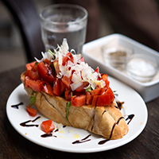
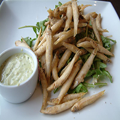

Appetizers:

Bruschetta with Balsamic Reduction
Recipe
- wood-fired bread
- garlic peeled, halved and crushed
- dash of extra virgin olive oil
- ripe tomatoes, diced
- shredded basil leaves
- shredded parmesan
- sprinkle of balsamic reduction
Go To Photograph Reference

Fried White Bait with Tartare sauce and salad
Recipe
- fried white bait
- rocket leaves
- tartare sauce
- whole egg mayonnaise
- finely chopped parsley
- freshly squized lemon juice
- finely chopped capers
- djion mustard
Go To Photograph Reference
© Stefano Cortese 2015